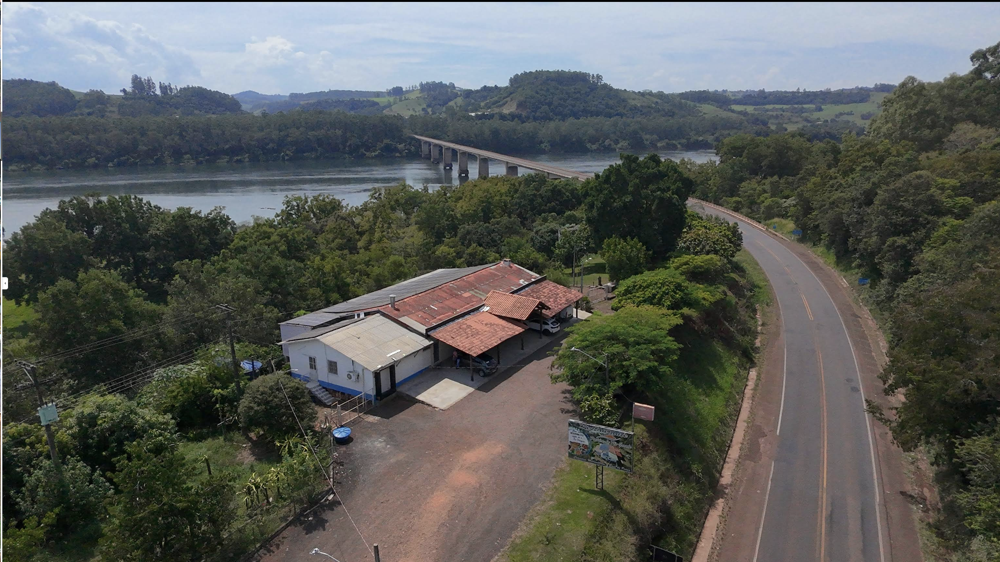
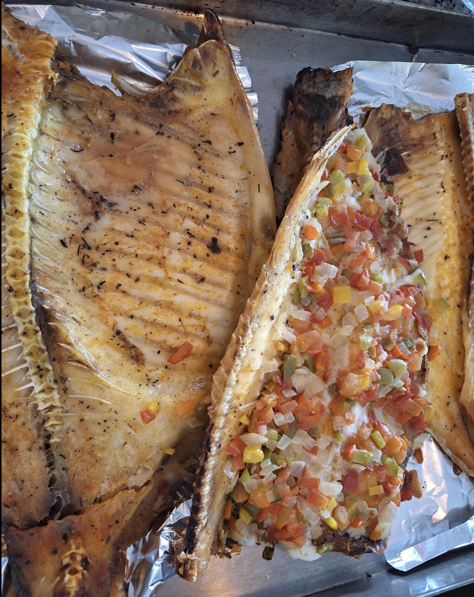
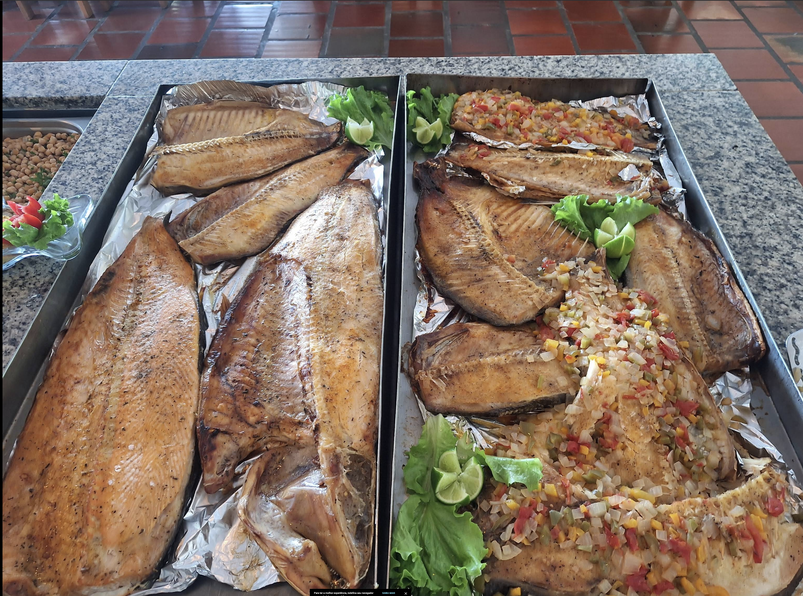
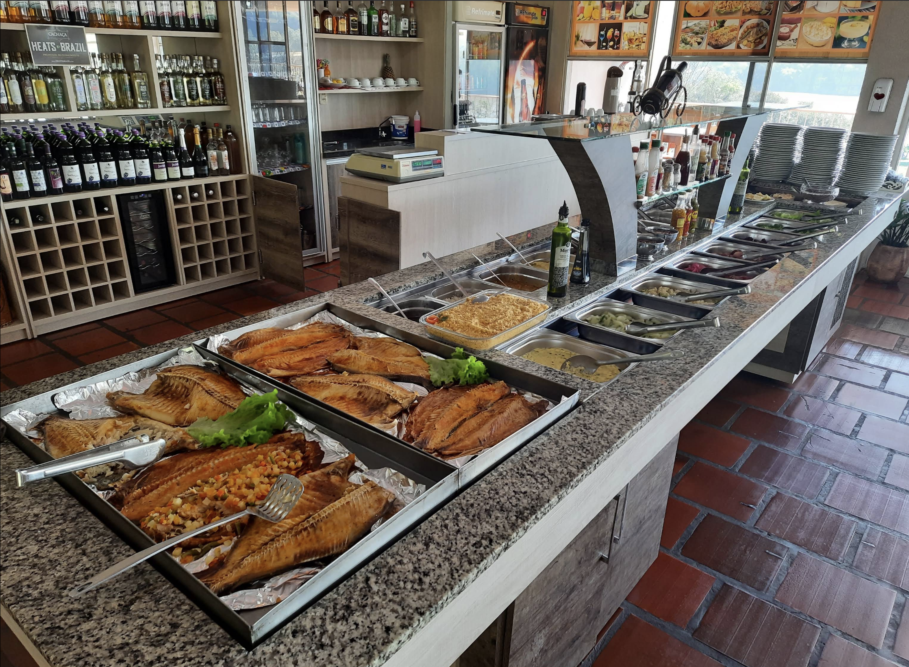
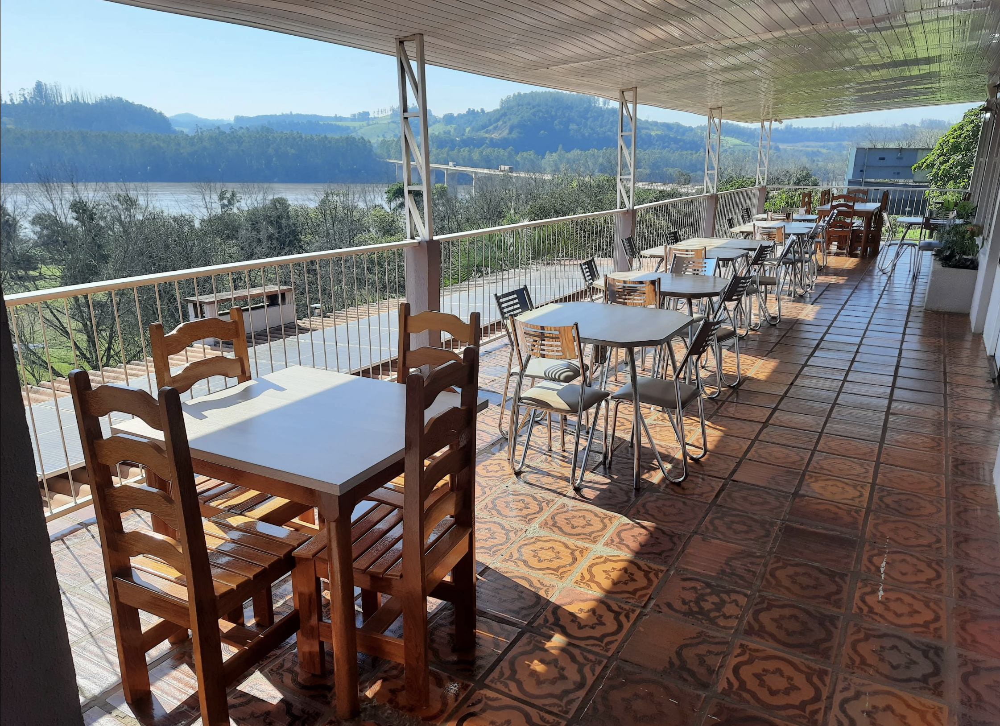

Referência em beira de estrada em Iraí (RS), oferecemos peixes assados incomparáveis, buffet caseiro e uma vista deslumbrante do Rio Uruguai na divisa com Santa Catarina.
Baseado em mais de 520 avaliações de viajantes e clientes.
O **Restaurante Porteira do Rio Grande** nasceu para ser mais do que uma simples parada na rodovia. Cada detalhe é pensado para proporcionar um ambiente extremamente organizado, limpo e aconchegante para quem viaja ou quer desfrutar de um almoço em família inesquecível.
Combinamos a hospitalidade gaúcha com pratos fartos, boa música ambiente e um atendimento que faz você se sentir em casa.
Média por Pessoa
Ambiente Familiar
Considerado por viajantes um dos melhores restaurantes de beira de estrada do sul.
Música ambiente agradável (pop adulto internacional) para acompanhar sua refeição.

AssadoPreparado com temperos artesanais exclusivos da casa, garantindo suculência e um sabor marcante inconfundível.

EspecialPeixes frescos assados no ponto certo, muito elogiados por quem passa pela rodovia em busca de qualidade.

BuffetOpções variadas de pratos quentes e saladas frescas preparadas diariamente para acompanhar suas escolhas.
Além dos peixes, nosso buffet conta com diversas opções de pratos quentes, saladas frescas e acompanhamentos preparados diariamente com ingredientes selecionados.
Para finalizar, oferecemos deliciosas sobremesas caseiras para adoçar o seu dia de viagem.

Situado na divisa do Rio Grande do Sul com Santa Catarina em Iraí, o restaurante proporciona uma vista espetacular do Rio Uruguai, tornando a sua refeição um momento inesquecível de descanso e contemplação da natureza.
"O buffet é simples, mas a comida é boa e o peixe assado é o diferencial. É uma parada excelente na rodovia para quem passa por Iraí."
Local Guide
"Um dos melhores restaurantes de beira de estrada que já fui, muito organizado e limpo, cada detalhe é bem cuidado. Peixes assados maravilhosos!"
Local Guide
"Lugar excelente com uma vista magnífica do rio Uruguai, na divisa do Rio Grande do Sul com Santa Catarina. Servem vários tipos de peixe assado!"
Local Guide
*Dica de viajante: fique atento ao acessar a rodovia para encontrar a entrada correta do restaurante com facilidade.*
Rod. Gov. Leonel de Moura Brizola, 13 • Beira de Rodovia.
Abrir no Google Maps